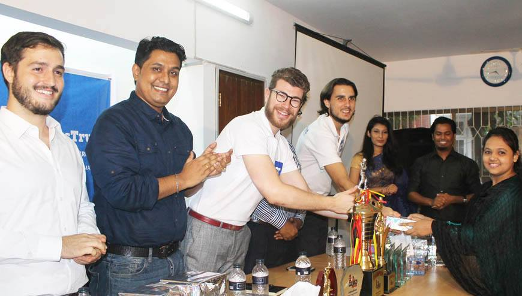
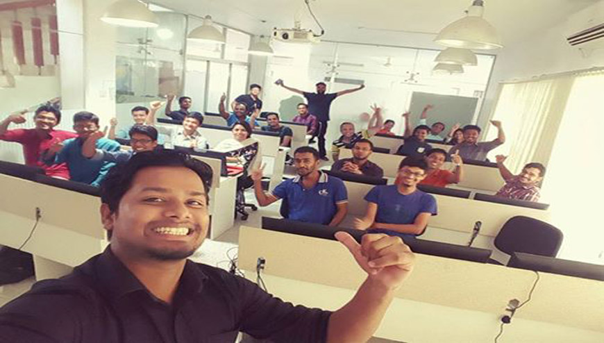
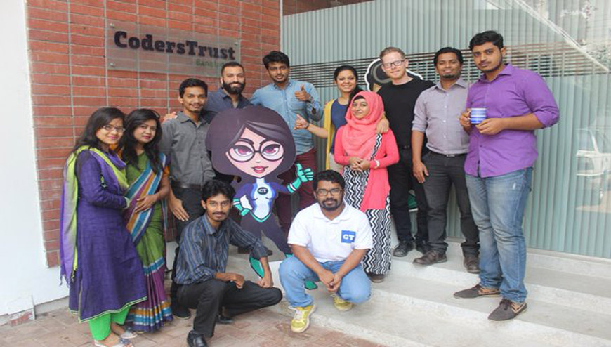
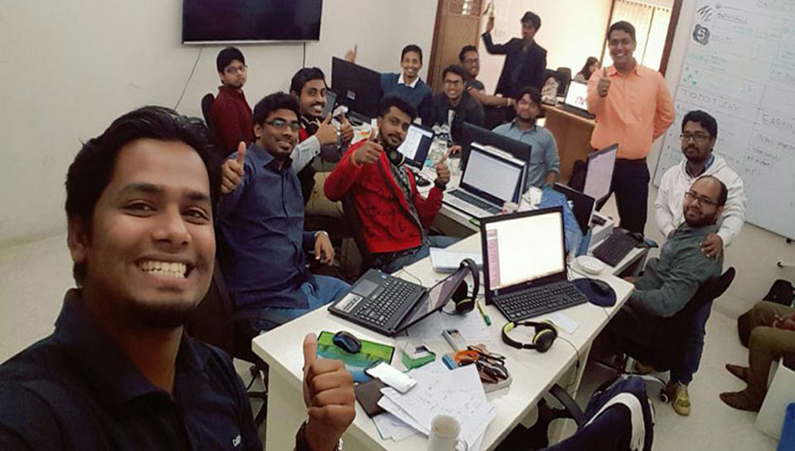

Coders Trust Bangladesh!
CodersTrust is an initiative backed by the development fund Danida, or Danish International Development Agency, to provide microfinance and education for students in emerging nations who want to upgrade their programming skills. The hope of founder, Copenhagen-born entrepreneur Ferdinand Kjærulff, is that these students are empowered to sell their work internationally via freelance portals such as Upwork. The team is currently operating in Dhaka, Bangladesh, where it collaborates with Grameen Bank, which is renowned for its part in revolutionising the microfinance industry. Skype seed funder Morten Lund invested in the company in March 2014, describing it as a "profitable charity."
Kjærulff announced the details of a partnership with Elance during an interview with Sir Richard Branson at a Virgin Unite event held at Hotel D'Angleterre in Copenhagen, Denmark, in April 2014. He points out that the enhanced reputation that comes with an extra three years of online working can demonstrably boost local wages by 190%, compared to a modest 38% increase after three years of additional standard education in the classroom.
- 
- 
- 
- 
© Copyright 2016 Abu Shahed | All Rights Reserved | Powerded By CODERSTRUST